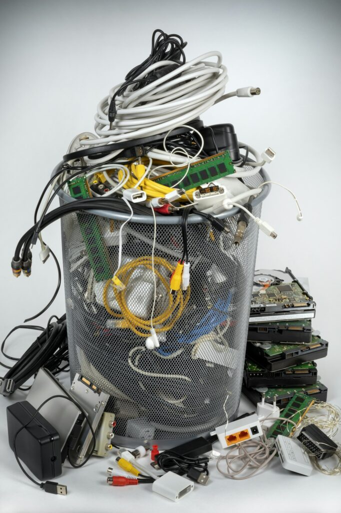
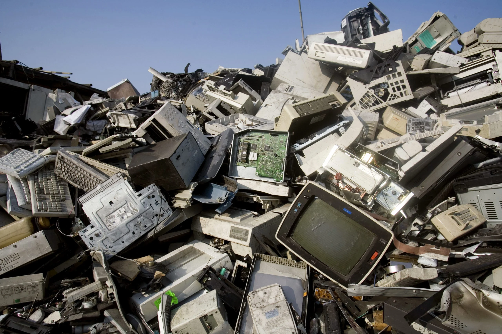

电子废弃物（Electronic waste）俗称“电子垃圾”，是指被废弃不再使用的电器或电子设备。
Electronic waste, commonly known as "e-waste," refers to discarded electrical or electronic devices that are no longer in use.
电子垃圾需谨慎处理，因为容易造成严重的环境污染并危害人类健康。大型电器电子产品可联系规范的电子废弃物回收企业预约回收，或按大件垃圾管理要求投放。小型电器电子产品可按照可回收物的投放方式进行投放。
E-waste requires careful handling as improper disposal can lead to severe environmental pollution and harm human health. Large electronic appliances should be recycled through certified e-waste recycling companies or disposed of according to bulky waste management regulations. Small electronic devices can be disposed of following the guidelines for recyclable waste.
电冰箱、洗衣机、空调、电视机、电脑、手机、电饭煲。
Refrigerators, washing machines, air conditioners, televisions, computers, mobile phones, rice cookers, etc.
上一篇：装修垃圾
下一篇：更多信息